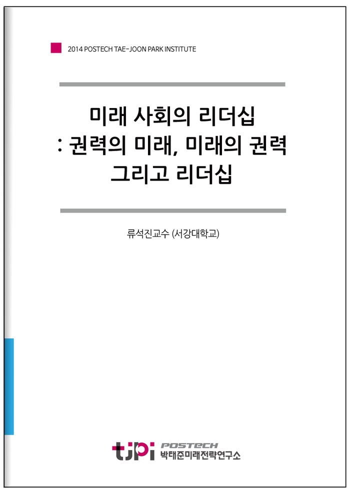

저자 류석진교수 (서강대학교)보도일 2014-12-09
요 약
권력의 미래, 미래의 권력 그리고 리더십
지금의 과도기가 성찰을 요구한다
사회와 역사는 하나의 신기술 등장에 의해 과거와 완전히 단절되는 것이 아니다. 탈근대사회라고 일컬어지는 지금의 상황도 근대의 모든 가치가 소멸된 것이 아니다. 또한 전환의 시기에는 모든 것이 갈등하고 그 갈등을 잘 관리하지 못하면 다음 단계로의 연착륙(soft landing)이 어려울 뿐만 아니라 사회적 차원에서의 갈등에 소모되는 비용도 불필요하게 많아진다. 권력의 미래에 대한 모든 가능성은 열려 있지만 미래의 권력을 구체적으로 상정하기 힘든 것은 바로 이런 이유 때문이다.
지금은 스마트-소셜 시기로 진입하는 과도기일 뿐이고 아직 진행형이다. 우리가 어떤 선택을 하는지에 따라 필요조건으로서의 뉴미디어가 약이 될 수도 있고, 병이 될 수도 있다. 뉴미디어의 가능성은 지금 우리의 선택이라는 충분조건에 따라 모양을 갖추어 나갈 것이고, 이에 대한 현명한 판단이 요구되는 시점이다. ‘현재의 권력’과 ‘미래의 권력’이 충돌하지 않는 방향으로의 성찰적인 모색이 필요한 이유이다.
미래 리더가 갖춰야할 리더십
인간성의 복잡한 구성요소만큼 리더십의 구성요인은 매우 다양하다. 개인․조직․제도 차원의 변화와 관련하여 미래의 리더십은 이러한 변화에 조응하는 내용으로 구성될 수 있다. 즉, 개인 차원에서 의제 설정권력이 강한 연결된 개인이 등장하고 있다면, 미래의 리더십은 반응적이고 연결적인 리더십으로 구성되어야 한다. 집단 차원에서도 네트워크 집단이 강화되고 있다면 이렇게 연결된 집단을 이끌 수 있는 창의적이고 공유적인 리더십이 필요하다. 마지막으로 제도 차원에서 수평적 권력성과 제도의 투명성이 요구되는 만큼 경성 권력 보다는 연성 리더십과 개방형 리더십이 필요한 것이다.
개인 차원의 의제설정권한이 확대되고 네트워크 행위자가 출현한다면 네트워크 내에서의 리더십은 반응성이 높고 연결을 잘하는 리더십이어야 하며, 집단 차원에서 네트워크 집단화가 촉진되고 있기 때문에 그렇게 연결된 집단을 공유적 가치와 창의적 가치로 이끌어나갈 리더십에 대한 요구가 높아질 것이다. 또한 제도적 차원에서 수평적 권력화와 제도의 투명성에 대한 요구가 높아지는 만큼 수평성 속에 리더십을 매력적으로 할 수 있는 일상 속에서의 소프트 리더십이 요구될 것이며, 투명성을 수용할 수 있는 개방형 리더십을 찾게 될 것이다.
요약과 정리
미래사회는 개인외 의제설정 권한이 확대된다. 이는 반응적 리더십을 요구하게 된다. 또한 네트워크 행위자(개인)이 대거 출현한다. 이는 연결적 리더십을 요구하게 된다.
미래사회는 네트워크가 집단화된다. 이는 창의적 리더십과 공유형 리더십을 요구하게 된다.
미래사회의 제도는 수평적 권력을 강화하는 방향으로 변화하게 된다. 이는 소프트 리더십을 요구하게 된다. 또한 미래사회는 제도의 투명화가 더욱 진행될 것이다. 이는 개방형 리더십을 요구하게 된다.
목 차
Ⅰ. 환경 변화와 리더십
1. 리더십의 과거•현재•미래
2. 리더십의 경제•사회문화•정치적 환경
Ⅱ. 리더십 환경의 변화 : 개인•집단•제도
1. 개인 : 의제설정권한 확대와 네트워크 행위자 출현
2. 집단 : 네트워크 집단 활성화
3. 제도 : 수평적 권력 관계와 제도의 투명성에 대한 요구 확대
Ⅲ. 미래의 리더십
1. 개인 차원 : 반응적•연결적 리더십
2. 집단 차원 : 창의적•공유형 리더십
3. 제도 차원 : 소프트•개방형 리더십
Ⅳ. 리더십의 미래
1. 현재의 권력과 미래의 권력간 조화
2. 필요조건으로서의 뉴미디어
3. 변화에 대한 선택과 반응
Ⅴ. 결론
참고자료
내 용
[2014 연구논문] 미래 사회의 리더십 : 권력의 미래, 미래의 권력 그리고 리더십
류석진교수 (서강대학교)

